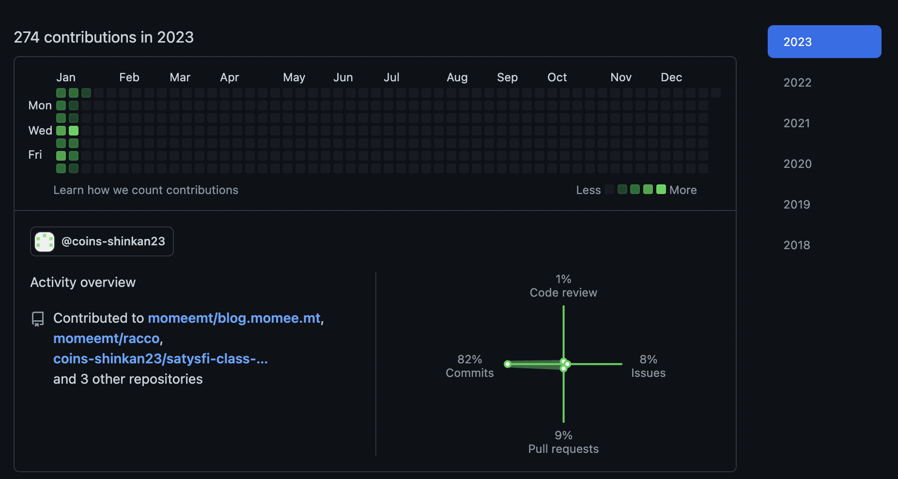

今週の日報
やったこと・勉強したこと
- 料理
- チゲ鍋
- 新歓パンフレット
- SATySFiクラスファイルを作った
- markdown入れた
- textlintのワークフロー入れた
- 詳解Rustプログラミングを第2章〜第5章半分
- AREポスター提出
- シミュレーション物理
- 実例によるPureScriptの第4章
- jsysで北海道に行った
GitHub
123 contributions
新歓とか授業とか。ちょっとRust書いてたかも。
目標の振り返り
- 最初の方はやっていたけど毎日はできなかった
- まだ履修部分を書けていない
- まだ途中
- 5章くらいまでは読んだ
反省
週末に北海道旅行に行くことを全く覚えてなかったのがよくなかった[1]。
SATySFiとRustの勉強が全然進んでいないのがかなりまずい、とはいえ新歓パンフレットのCIは上手く時間短縮できたので良かった。自分の担当文もさっさと書いて早めに組版作業と会計をやらないといけない。
睡眠周りがちょっと難しかった。かなり強い意志を持たないと22:30に寝れないし6:00に起きれないので、とりあえずこの目標をクリアできるまで引き続きやっていきたい。
執筆現在[2]、AREはなんとか乗り切ったので明日のジョットク、シミュレーション物理レポート、QRを倒します。
第2週ってやる気も無くなってくるのでまあこんなもんだと思う。上手くモチベーションを保ちつつやりたいこと[3]も差し込みたい。
目標
- Sorted³で次の日の日程を組む
- YouTubeを開く日を3日以内に抑える
- 新歓パンフレットの執筆を終わらせる
- 組版を開始する
- 掃除をする
- 5日以上は22:30までに寝る
- 3日以上は6:00に起きる
- 簡単な3DCGの制作に取り組む
- Create with Code - コードを使ってゲームを作ろうに取り組む
- ジョットクのスライドを完成させる
- The SATySFi bookを読み終える
- 詳解Rustプログラミングを読み終える
- 低レイヤを知りたい人のためのCコンパイラ作成入門のステップ16まで進める
- QRの土台を作る
- SOSのコードリーディングを進める
- HaskellでJSONパーサを書く
- Haskell JSONパーサの簡単な記事を書く
脚注
- たいてい目標は週末に回収しているので。これもよくない
- 2023.01.16
- 今はOOP本をScalaで追いかけるのとか、HaskellでJSON実装とかをやりたいかなあ、